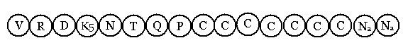
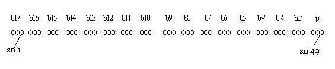

Bài 3 LỘ NHÃN MÔN CẢNH RẤT LỚN Khi năm cảnh trần có sức mạnh chiếu thẳng vào năm môn tương ứng, khởi lên tiến trình sinh diệt của một số tâm khách. Tâm lộ nào có 7 loại tâm khách, quy trình ấy được gọi là tâm lộ ngũ môn cảnh rất lớn. Chúng ta dùng lộ nhãn môn để diễn giải, các lộ kia có mô thức tương tự. I- ĐỊNH NGHĨA. Y cứ vào sát-na tâm trong tâm lộ, khi cảnh đồng sanh vào sát-na Sinh của tâm hữu phần Vừa qua, sau hai sát-na Rúng động thì tâm Khách sanh khởi để nhận cảnh, cảnh này gọi là cảnh rất lớn. Gọi là lộ nhãn môn cảnh rất lớn, là khi cảnh sắc chiếu vào nhãn vật, đồng sanh với hữu phần Vừa qua, làm khởi sanh tâm khách sau hai sát-na Rúng động kế tiếp. II. PHÂN TÍCH Lộ nhãn môn cảnh rất lớn diễn hoạt theo ba phương thức: chót Na cảnh, chót đổng lực và chót hữu phần Khách. A- Lộ nhãn môn cảnh rất lớn chót Na cảnh Biểu đồ: Lộ nhãn môn cảnh rất lớn chót Na cảnh diễn tiến như sau:  Ký hiệu. V: Hữu phần Vừa qua (atītabhavaṇga) Lộ này có được: - Sát-na: 14 sát-na tâm khách (không kể 3 sát-na tâm hữu phần). Diễn giải. Dòng hữu phần (bhavaṅga) đang bình lặng trôi êm ả theo qui luật của tâm Chủ (mūlabhavaṅga), cảnh sắc lọt vào thần kinh nhãn (cakkhupasāda) chiếu thẳng vào tiểu sát-na Sinh (uppādakhaṇa) của tâm hữu phần, sát-na tâm này được gọi là tâm hữu phần Vừa qua (atītabhavaṅga). Cảnh sắc có thể chiếu vào tiểu sát-na Trụ (ṭhītikhaṇa), hay tiểu sát-na Diệt (bhaṇgakhaṇa) hay không? Điều này không thể được, vì rằng sự sinh, diệt của tâm rất nhanh, hầu như chỉ nhận thức được hai sát-na tiểu là Sinh - Diệt mà thôi, nên một số Giáo Thọ sư bảo rằng: "Tâm chỉ có hai sát-na tiểu là Sinh và Diệt, nhưng phân thành sinh, trụ, diệt để dễ hiểu". Do đó, khi cảnh sắc chạm vào sát-na hữu phần thì xem như chạm vào tiểu sát-na Sinh, nếu chạm vào tiểu sát-na Diệt thì xem như đã qua sát-na tâm khác, vì tâm vốn sinh diệt không gián đoạn (Vô gián duyên). Tiếp theo, cảnh sắc làm dao động sát-na hữu phần kế tiếp, sát-na hữu phần này gọi là hữu phần Rúng động (bhavaṅgacalana), rồi cảnh sắc lại làm dao động đến hữu phần kế tiếp nữa, bấy giờ cảnh Chủ bị sức mạnh của cảnh sắc lấn áp, không thể khởi lên giúp cho tâm hữu phần sinh lên, dòng tâm hữu phần (dòng tâm Chủ) chấm dứt ở đây, do đó sát-na hữu phần thứ ba có tên gọi là hữu phần Dứt dòng (bhavagaṅgupaccheda). Thật ra, cả hai sát-na hữu phần Rúng động và Dứt dòng đều bị cảnh Sắc làm dao động, nhưng sau sát-na Rúng động thứ hai, tâm Chủ không thể sanh khởi lên nên gọi là hữu phần Dứt dòng cho dễ hiểu. Vì sao phải trải qua hai hữu phần Dao động? Vì tâm sanh diệt cực nhanh, cảnh mới muốn cắt đứt cảnh cũ để cho tâm khách sanh khởi phải có ít nhất là hai sát-na hữu phần Dao động, khi ấy sức mạnh cảnh Khách mới có đủ năng lực cắt đứt cảnh Chủ. Ví như người chạy nhanh, không thể ngừng ngay được, muốn ngừng gấp cũng phải chúi đầu về trước hai bước nữa, sau đó mới đứng hẳn được. Khi sát-na hữu phần Dứt dòng diệt đi, cảnh sắc hoàn toàn "chiếm ngự" dòng tâm thức. Kể từ đây, một loạt tâm Khách khởi lên để nhận cảnh sắc cho đến khi cảnh này không còn sức mạnh tác động đến cảnh Chủ, cảnh Chủ lại khởi lên và tâm hữu phần lại tái hiện khởi. Có bảy lọai tâm khách khởi lên để thích ứng với cảnh sắc trong mô thức này. Trước tiên là tâm Hướng ngũ môn (pañcadvāravajjana), tâm này có phận sự (kicca) "mở cửa" để nhận lấy cảnh sắc, rồi diệt đi tạo điều kiện cho nhãn thức (cakkhuviññāṇa) sanh khởi, khi nhãn thức diệt đi, lần lượt tâm Tiếp thâu, tâm Quan sát và tâm Đoán định sanh lên theo thứ tự để làm phận sự riêng đối với cảnh sắc (nên nhớ tâm này diệt đi, tâm khác mới sanh lên). Tâm Tiếp thâu có phận sự nhận lấy cảnh trọn vẹn, tâm Quan sát có phận sự xem xét cảnh, tâm Đoán định (voṭṭhapanacitta) thì phán đoán cảnh để tạo điều kiện cho đổng lực sanh khởi. Chữ Voṭṭhapana là hợp từ của "Vi + ava + √tha" nghĩa là "bắt cứng vào", "dựa trên", theo nghĩa trắng là đặt xuống một cách trọn vẹn. Nghĩa là chính ngay lúc ấy bản chất của cảnh được xác định một cách trọn vẹn, dịch là Đoán định hay Phán đóan. Sau sát-na Đoán định là bảy sát-na tâm đổng lực (javanacitta) sanh khởi liên tục để ứng xử với cảnh, chính nghiệp dị thục được tạo ra tại nơi đây. Dứt luồng đổng lực là hai sát-na Na cảnh sanh lên để hưởng cảnh còn dư sót, sát-na Na cảnh thứ 2 diệt đi thì cảnh sắc cũngdiệt vì hết tuổi thọ, nhường cho cảnh Chủ sanh lên, hửu phần cơ bản lại tái hiện, chấm dứt một tiến trình diễn họạt của tâm thức đối với cảnh sắc. Có ví dụ tiến trình diễn họạt của lộ này như sau. Có người đang nằm ngũ dưới gốc cây xoài, gió thổi qua làm trái xoài rụng, người ấy bị âm thanh do trái xoài rơi xuống kích thích, ngồi dậy đưa mắt hướng về tiếng động, nhìn thấy trái xoài, bước đến nhặt lấy, xem xét trái xoài như thế nào, thấy xoài chín không bị hư, y ăn trái xoài, ăn xong lại chép miệng nếm hương vị xoài còn dư sót. Rồi nằm xuống ngũ tiếp. Nằm ngũ dưới gốc xoài ví như hữu phần. Trái xoài rụng ví như hữu phần Vừa qua, Bị âm thanh kích thích ví như hữu phần Rúng động. Giật mình thức giấc, ngồi dậy ví như hữu phần Dứt dòng. Đưa mắt hướng về tiếng động ví như Hướng ngũ môn. Nhìn thấy trái xoài ví như nhãn thức. Bước đến nhặt ví như Tiếp thâu. Săm soi xem xét ví như Quan sát. Thấy xoài chín lại không bị hư ví như Đoán định. Ăn trái xoài ví như đổng lực. Ăn xong còn chép miệng ví như Na cảnh, Nằm xuống ngũ tiếp ví như hữu phần cơ bản lại hiện khởi. Tâm Hướng ngũ môn và nhãn thức ngoài phận sự riêng còn có phận sự làm cho cảnh lộ rõ, ba tâm Tiếp thâu, Quan sát và Đoán định có thêm phận sự "hoàn chỉnh cảnh", đổng lực thì hưởng cảnh trọn vẹn, còn Na cảnh hưởng cảnh sắc còn dư sót, ví như Đức Vua đã dùng xong món vật thực thỏa thích, người hầu của Vua sẽ dùng món vật thực dư tàn ấy. Tâm đổng lực (javanacitta) ra sao? Danh từ Javana xuất nguyên từ "√ju" là chạy nhanh. Đây là một danh từ kỹ thuật rất quan trọng, thông thường có nghĩa là nhanh lẹ như javanahaṃsa (con thiên nga nhanh nhẹn) hay javanapaññā (nhanh trí). Trong Abhidhamma danh từ này được dùng theo ý nghĩa thuần túy kỹ thuật, Ngài Santakicco (Tịnh Sự) dịch là đổng lực, để chỉ cho ý nghĩa "nhanh nhẹn – javana" nhưng tiềm ẩn một sức mạnh, vì chính nơi đây đã lưu giữ hạt giống nghiệp (bījakamma) cho quả dị thục sau này, ngoại trừ đổng lực của vị A La Hán. Bà Rhys Davids viết: "Tôi đã trải qua suốt nhiều giờ để suy tư về danh từ javana và rốt cùng bỏ đi danh từ apperception để tìm một chữ khác thích ứng hơn, hoặc để nguyên danh từ javana mà không dịch..." Ở đây Javana gọi là chạy vì suốt trong tâm lộ, nó sinh diệt liên tục bảy (hay năm) sát-na, nó là một loại tâm, cùng "đeo níu" một cảnh. Tuy bảy sát-na đổng lực có bản chất giống nhau, nhưng tiềm lực mạnh yếu lại khác nhau. Ở tâm lộ ngũ môn, javanacitta luôn luôn là tâm Dục giới, đó là 29 tâm (12 tâm bất thiện, 8 tâm đại thiện, 8 tâm đại Hạnh và tâm Sinh tiếu), không thể có tâm Đáo đại hay tâm Siêu thế trong lộ ngũ môn (tâm Đáo đại: Mahaggatā, là những tâm thiền thiện hoặc tâm thiền của vị A laHán, gọi là tâm thiền Hạnh - jhānakriyacitta). Ngoại trừ 8 tâm đại Hạnh (tâm đổng lực Dục giới của vị A La hán) với tâm Sinh tiếu có tính phi nhân phi quả (nahetuka navipāka) nên không cho quả dị thục về sau. Chính trong giai đoạn này nghiệp thiện được tạo ra từ tâm thiện hay nghiệp bất thiện được hình thành từ tâm bất thiện. Như khi gặp kẻ thù tư tưởng thù hận phát sanh, thế là nghiệp bất thiện được tạo ra từ tâm sân, nhưng với người có trí, có niệm vẫn có thể khởi lên tâm từ bi với kẻ thù, thế là nghiệp thiện được hình thành từ tâm vô sân. Chính vì thế, Đức Phật có dạy trong Kinh Pháp Cú rằng: "Làm điều ác do ta Trong 7 sát-na đổng lực, sát-na thứ nhất có sức mạnh kém nhất vì sanh khởi trước tiên, không có tiềm lực đồng chủng nâng đỡ, yếu kém thứ hai là sát-na thứ 7, tuy có tiềm lực trước nâng đỡ nhưng đã muội lược và sắp diệt. Mạnh nhất là sát-na thứ 4 vì là sát-na Quyền (trong 7 đổng lực), bốn sát-na còn lại khó mà xác định. Ta nên hiểu rằng: Javana thiện hay Javana bất thiện là phần tích cực tạo thành nghiệp hữu (kammabhava), nó tạo điều kiện cho kiếp sống vị lai. Phân tích. Lộ nhãn môn cảnh rất lớn chót Na cảnh có đầy đủ mười bảy sát-na tâm, cảnh sắc cũng vừa tròn tuổi thọ đồng diệt với sát-na tâm Na cảnh thứ hai. Nên biết rằng: danh pháp chỉ tồn tại một sát-na, trái lại sắc pháp có tuổi thọ gấp 17 lần danh pháp, Pāli có dẫn giải: Kathaṃ? Uppādaṭṭhitibhaṅgavasena "Như thế nào? Một sát-na tâm gồm ba giai đoạn sinh, trụ và diệt. Mười bảy sát-na (tâm) như thế là tuổi thọ của một sắc pháp." Hỏi: Khaṇa (sát-na) là gì? Sự khác nhau giữa sát-na Trụ của danh và sắc ra sao? Đáp: "Sát-na (khaṇa) là một đơn vị cực ngắn, không thể dùng thí dụ hay hình ảnh nào có thể diễn đạt được. Các Giáo Thọ sư cổ xưa bảo rằng: "Trong một cái tróc tay danh pháp sanh diệt một ngàn tỷ lần, tức là có một ngàn tỷ sát-na, còn sắc pháp sanh diệt 58 tỷ, 820 triệu lần (58.820.000.000)". Tuy nhiên, không phải sắc pháp nào cũng có tuổi thọ là 17 sát-na cả, các Ngài bảo rằng: "Hai sắc Biểu tri (viññattirūpa) là Thân biểu tri (kāyaviññatti) và Ngữ biểu tri (vācāviñ!ñatti) cùng với bốn sắc Tướng trạng (Sinh - Tiến - Dị -Diệt) không tồn tại suốt 17 sát-na". Hai sắc Biểu tri đồng sanh đồng diệt với tâm, gọi theo Dukamātikā và Mahantaraduka là: Pháp đồng hành với tâm (Cittasahabhunodhammā). Còn sắc Tướng trạng chúng không phải là sắc pháp chân đế, chúng chỉ là biến trạng của sắc thành tựu (nipphannarūpa) mà thôi, nên không thể tính tuổi thọ như các sắc pháp khác. Mỗi sát-na tâm có ba sát-na tiểu (sinh - trụ - diệt), nên đời sống sắc pháp là 51 sát-na tiểu (so với tâm), nên sát-na Trụ của sắc pháp có đến 49 sát-na tiểu, đây là sự khác biệt giữa sát-na Trụ của danh và sắc." Lộ nhãn môn cảnh rất lớn chót Na cảnh có được 46 tâm khách dục giới (là 54 tâm Dục giới trừ bốn đôi thức còn lại), hiện khởi cho 8 hạng người (4 phàm nhân và 4 Thánh Quả) ở trong 11 cõi Dục giới. Cách phân loại người theo Siêu Lý. Theo Siêu Lý, người được phân theo sát-na tâm, như sau: - Chúng sanh tục sinh bằng tâm Quan sát thọ xả quả bất thiện (akusalavipākāhetuka upekkhāsahagataṃ santīranacittaṃ), gọi là người Khổ. - Chúng sanh tục sinh bằng tâm Quan sát thọ xả quả thiện (kusalavipākāhetuka upekkhāsahagataṃ santīranacittaṃ), gọi là người Lạc vô nhân. - Chúng sanh tục sinh bằng tâm quả thiện Dục giới hữu nhân không có trí (kusalavipākahetuka ñāṇavippayuttacittaṃ), gọi là người Nhị nhân. - Chúng sanh tục sinh bằng tâm quả thiện có trí (kusalavipāka ñāṇasaṃpayuttacittaṃ), gọi là người Tam nhân. Bốn hạng người này gọi chung là phàm nhân. - Sát-na Sơ đạo được gọi là người Sơ đạo. Bốn người này gọi chung là người Đạo. Tuy gọi là người thật ra ám chỉ sát-na Đạo, nói cách khác "người Đạo chỉ tồn tại 1 sát-na Đạo mà thôi". - Bậc Tu Đà Huờn gọi là người Sơ quả. Bốn người này gọi chung là người Quả. Vì sao gọi là Chặng (ṭhāna)? Chặng là khoảng thời gian mà tâm khách làm xong phận sự riêng của mình đối với cảnh, khi "công tác hoàn thành" thì diệt đi, nhường cho loại tâm khác sanh lên làm phận sự riêng nối tiếp, ví như người cày xong, thì giao lại cho người bừa, khi bừa xong thì giao lại cho người gieo mạ ... Cứ mổi loại tâm khách thực hiện một phận sự riêng, nên mỗi lọai tâm khách là một chặng. Như tâm Hướng ngũ môn có phận sự khai mở năm cửa, tâm Hướng ý môn có phận sự khai mở cửa ý, hay làm phận sự "quyết định" cảnh trong lộ ngũ môn... Như vậy, 7 sát-na đổng lực là chặng thứ 6, hai sát-na Na cảnh là chặng thứ 7, năm sát-na tâm khách đầu (từ tâm Hướng ngũ môn đến sát-na tâm Đoán định), mỗi sát-na là một chặng. Sát-na Đoán định chính là tâm Hướng ý môn (manodvāvajjanacitta), chính tâm này là điều kiện chủ yếu khởi sanh luồng đổng lực thiện hay bất thiện. Tác ý khéo (yoniso manasikāra) để tâm thiện khởi sanh hay tác ý không khéo (ayoniso manasikāra) làm cho bất thiện tâm sanh khởi là do tâm Hướng Ý môn tạo tác vào thời điểm này. Gọi là hữu phần Vừa qua (HPVQ), là tâm hữu phần trôi qua trong giai đoạn cảnh ngũ đã có nhưng chưa đối chiếu với năm môn. Gọi là hữu phần Rúng động (bhavaṅgacalana) là tâm hữu phần bị dao động do hấp lực của cảnh ngũ, khi cảnh ngũ chiếu vào sắc thần kinh. Gọi là hữu phần Dứt dòng (bhavaṅgupaccheda) là tâm hữu phần nhận cảnh Chủ lần cuối, nhường cho cảnh Khách chen vào "cắt đứt" cảnh Chủ trong một lộ trình tâm. Hữu phần Dứt dòng cũng chính là tâm Hữu phần Rúng động lần thứ hai. Ba sát-na: hữu phần Vừa qua, hữu phần Rúng động và hữu phần Dứt dòng là tâm Chủ, 14 sát-na còn lại trong tâm lộ gọi là tâm Khách Nói về sắc pháp chúng cũng có ba giai đoạn là: sinh - trụ - diệt. Sinh là tiểu sát-na đầu tiên, diệt là tiểu sát-na cuối cùng (là sát-na tiểu thứ 51), như vậy giai đoạn Trụ của chúng được kể từ sát-na tiểu thứ hai đến sát-na tiểu thứ 50 . Vì sao đời sống sắc pháp dài hơn đời sống danh pháp? Nói đến sắc pháp là nói đến thô thể, cho dù đó là sắc nương từ tứ đại (sắc y sinh - upādāyarūpa), cũng là tinh chất của tứ đại (đất, nước, lửa, gió), khi sắc tứ đại tồn tại thì chúng tồn tại, khi sắc tứ đại diệt thì chúng diệt, tứ đại lại là một pháp chủng (dhamma jāti) thô. Danh pháp lại là một tế thể, chúng có bản chất tinh tế lại cực kỳ phù du. Nên sắc pháp có tuổi thọ dài hơn danh pháp. Ngay cả sắc pháp cũng vậy, nếu loại sắc nào có bản chất tinh tế hơn cũng có tuổi thọ ngắn hơn, như sắc Biểu tri, sắc Tướng trạng (lakkhaṇarūpa). Sắc Tướng trạng có bốn là: sắc Sinh có tuổi thọ là 1 sát-na tiểu, sắc Tiến có tuổi thọ là 24 sát-na tiểu (từ sát-na tiểu thứ 2 đến sát-na tiểu thứ 25), sắc Dị cũng có tuổi thọ như thế (từ sát-na tiểu thứ 27 đến sát-na tiểu thứ 50), sắc Diệt là sát-na tiểu 51. Riêng sát-na tiểu thứ 26 là phi Tiến phi Dị, chính thức là sát-na Trụ, cũng là sát-na Quyền (indriyakhaṇa). Tóm lại, vì danh pháp là tế thể nên đời sống ngắn hơn sắc pháp (là thô thể) 17 lần, ví như hương hoa mau hoại hơn màu hoa, màu hoa mau hoại hơn cánh hoa. Trợ sanh nhãn thức là sắc thần kinh nhãn ở giai đoạn trụ (ṭhitipatta), gọi là Ṭhitipattanīpa có 49 đoàn sắc thần kinh nhãn, 49 đoàn sắc thần kinh này được tính từ sát-na diệt của tâm Hướng ngũ môn trở về trước đến sát-na Diệt của tâm hữu phần thứ 17 (xem hình vẽ).  Ghi chú. b: sát-na tâm hữu phần (bhavaṅgacitta). Vì sao gọi là đoàn sắc thần kinh nhãn? Vì rằng: Sắc thần kinh nhãn là tinh chất của tứ đại, nên không thể đơn độc hiện khởi, nó luôn luôn đi chung với 8 sắc là: tứ đại, sắc cảnh sắc, sắc cảnh mùi, sắc cảnh vị và sắc vật thực, gọi là đoàn bất ly. Như vậy, đoàn thần kinh nhãn gồm 9 sắc là 8 sắc bất ly với sắc thần kinh nhãn. Trong 49 đòan thần kinh nhãn ở giai đoạn trụ, có 1 đòan sanh vào thời điểm tiểu sát-na Sinh của HPVQ, đoàn thần kinh nhãn này có tuổi thọ đồng với cảnh sắc, có tên là "thần kinh nhãn có tuổi thọ vừa vặn (với cảnh sắc)" (majjhimāyukacakkhupasāda). Các Giáo Thọ sư tiền bối bảo rằng: "Trợ sanh nhãn thức chỉ có Majjhimāyukacakkhupasāda", nhưng các Giáo Thọ sư đời sau cho rằng: "Cả 49 đoàn nhãn ở giai đoạn Trụ đều có thể làm duyên trợ sanh cho nhãn thức được cả". Hàng học Phật nên ghi nhận cả hai ý kiến trên để nghiên cứu. -ooOoo- Ðầu trang | Mục lục | 01 | 02 | 03 | 04 | 05 | 06 | 07 | 08 | 09 | 10 | 11 | 12 | 13 | 14 | 15 | 16 | 17 | 18 | 19 | 20 | 21 | 22 | 23 | 24 | 25 |